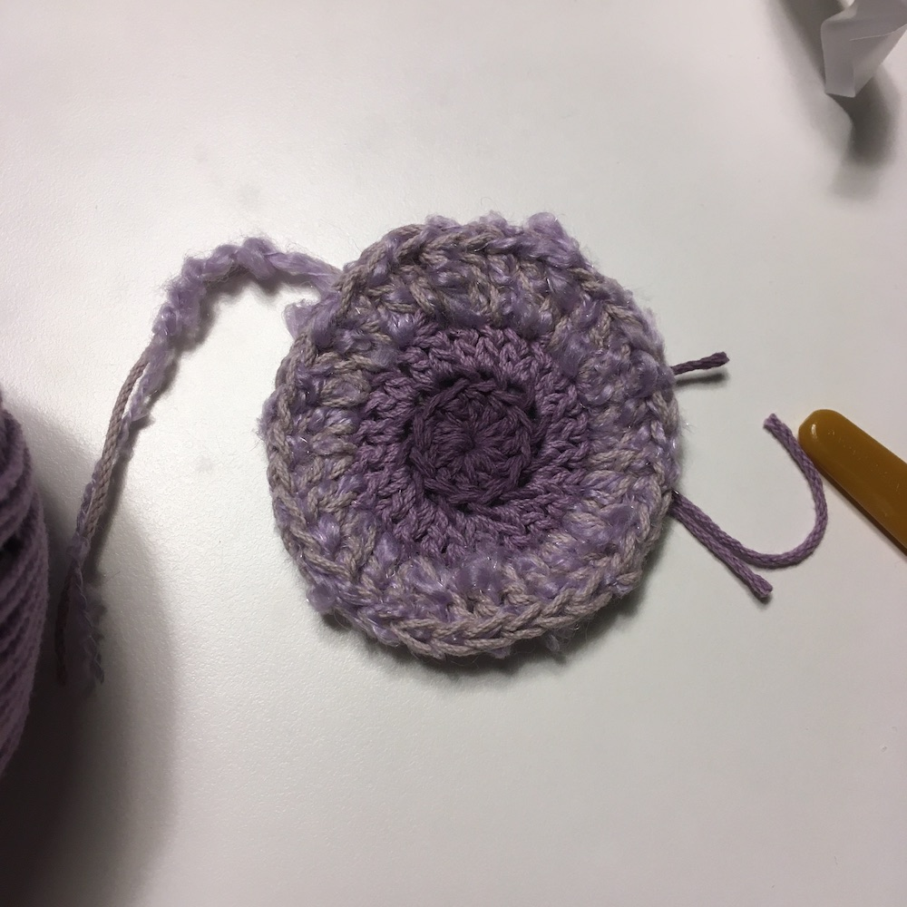
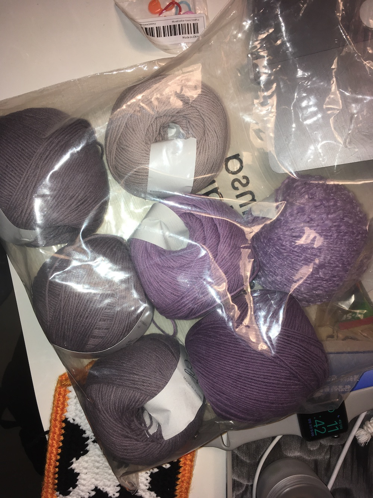
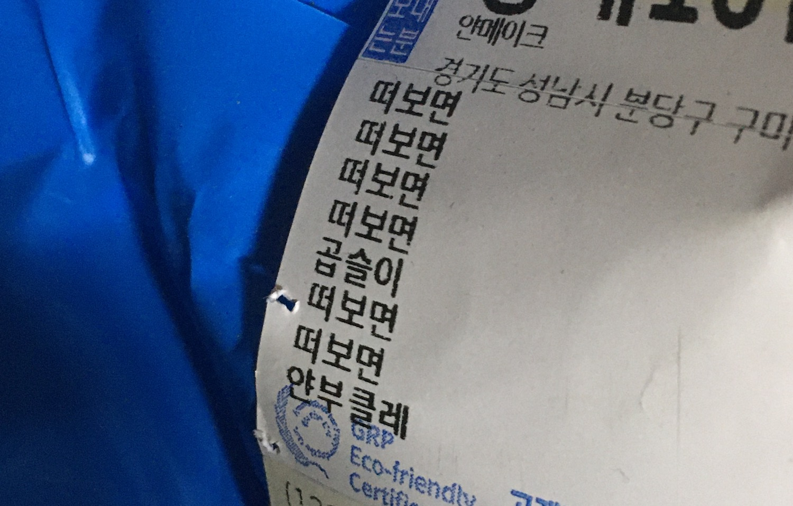
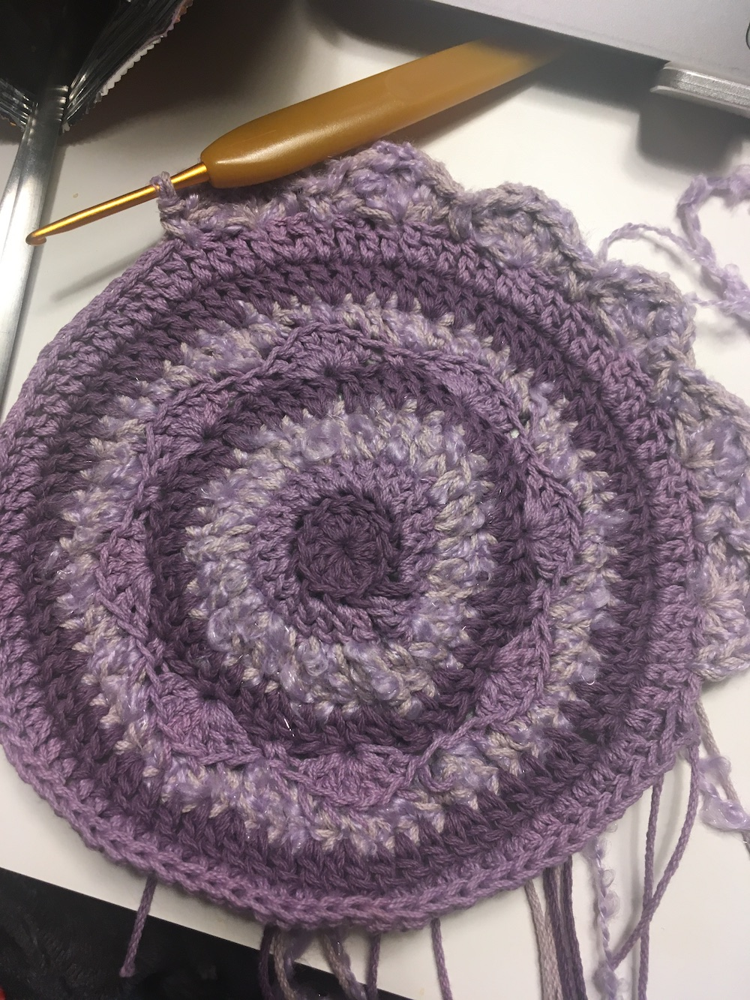

소고 가방으로 잠시 한눈파는 요즘.. 사실 잠시가 아니라 영원히 장구가방을 회피하는 중이다.
커미션(돈은 안받음)으로 보라색 소고가방을 뜨는 중이다. 앞판은 어떻게 저떻게 완성했고, 뒷판을 뜨고 있다. 한길긴뜨기의 지옥에 갇혀 있다. 어디까지넓어지는거예요?! 그래도 한~두 단 정도만 더 뜨면 얼추 원하는 크기에 도달할 것 같다.
악기 가방을 만들려고 계획을 하면서 방수에 대한 욕심을 버리지 못했는데, 방수실은 쫀쫀하게 짜는 데에 한계가 있어서 찾은 게 여름용 약간 까실까실한 코마사다. 정확히 어떤 소재인지는 모르겠지만, 부드럽고 처지는 형태가 아니라 적당히 빳빳하고 탄탄해서 통풍도 잘 되는 것 같고 습기에도 강해서 여름 의류나 모자 등에 활용되는 실인 것 같다. 적당한 타협점을 찾은 기분이라 만족스럽고, 뜰 때도 모양이 잘 잡혀서 그런지 왠지 기분이 좋다. 코마사.. 맘에 드는 소재..
이 실은 가성비실로 유명한, 뜨개꾼의 희망, 얀메이크의 ‘떠보면’이라는 실이다. #왜저떠봐요
이름이 다 이런 식이다. 착하면, 가늘면, 다방면, 싸면…. 여러 종류를 사봤고 다방면이 굵기가 적당해서 많이 사봤는데 얀메이크의 실 색은 너무 단순하달지, 직관적이랄지, 색감이 약간 아쉽다고 느꼈었다. 근데 이번에 산 떠보면 실들은 그래도 나름 다양한 스펙트럼의 실이 있는 것 같다.
아 그리고 앞판에는 중간에 링구사? 부클사? 약간 곱슬거리는 실이랑 합사해서 떠봤는데 나름 포인트가 되고 괜찮은 것 같다. 뜰 때 조금 짜증스럽기도 하지만 틀리거나 대충 떠도 오히려 티가 덜 난다는 확실한 장점이 있는 실이다.
이제 테 부분과 여밈 부분, 크로스 끈만 뜨면 완성할 수 있다. 한길긴뜨기지옥에서 제발 벗어나고 싶군.. 여밈 부분이 조금 고민인데 단추를 따로 사볼까 했는데 그냥 코바늘질로 끝장을 볼 계획이다.